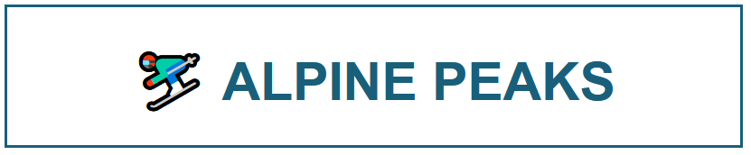

Skiing Snowboarding
Alpine Peaks is the premier outdoor dry ski slope in the area. We feature a 150-metre main slope equipped with a button lift, a dedicated nursery slope for beginners, and a freestyle park packed with ramps and rails.